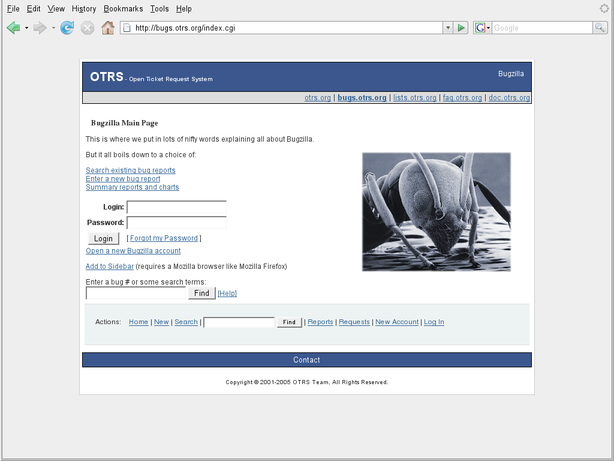

To submit bugs visit http://bugs.otrs.org/ (see Figure below). Please take note of the difference between a bug and a configuration issue. Configuration issues are problems that you encounter when setting a system, or general questions regarding the use of OTRS. Bug reports should only be used for issues with the source code of OTRS itself, or to file enhancements for OTRS. All your bug reports and enhancement requests are very welcome in the bug tracker.

Рисунок: Трекинг ошибок.
For configuration issues, you should either use the commercial support, available from OTRS.com, or the public mailing lists.
Вы поможете нам улучшить продукт если сообщите об ошибке. Мы ценним ваш вклад!